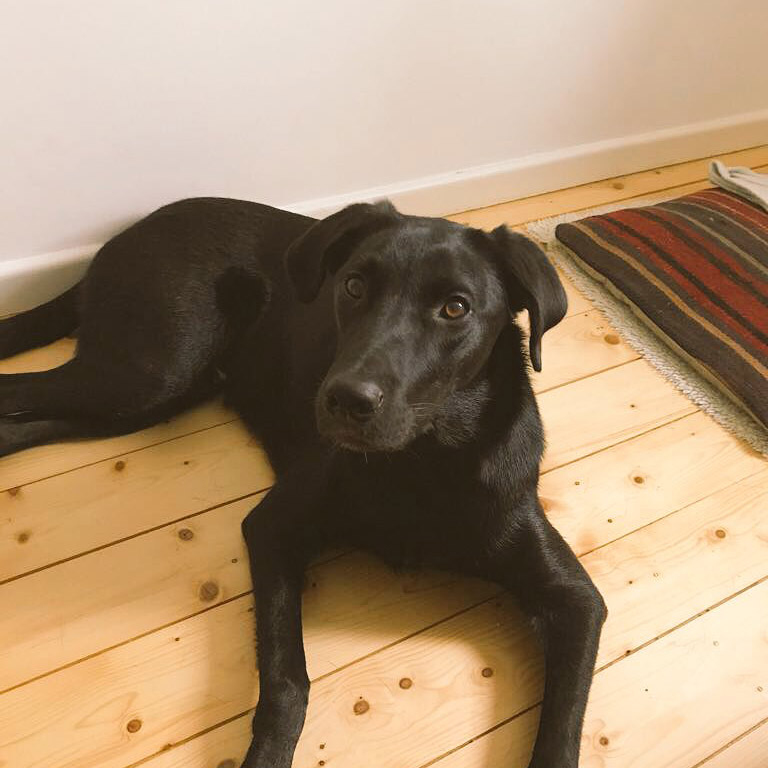

For instructors
Firstly, THANK YOU. Thank you for teaching/mentoring at this class!
The things you'll need:
- Slides & code editor - you and the students will use the same environment, which has the slides built in.
- Resources - this page has the base code the students will need to get started on the exercises, as well as links to further resources for those interested.
- Lightbulb Exercise - working solution to the lightbulb-powering onclick button exercise.
- Weather Exercise - working solution to the Weather API exercise.
- Open Weather Map API - used in the Weather API exercise.
- repl.it - good for students to save their work in for when they head home.
Before the class I suggest we set up the laptops to have Chrome open with two tabs: the editor and resources.
Teaching tips
- When answering questions during 1:1 interaction with students, look for answers on Google with them to (1) show them that engineers don't know everything, and (2) teach them how to look for information and answers to their questions.
- Students may ask how they can place two images next to one another.
This can be achieved with float: right and display: inline.
- Most students will be unfamiliar with keyboard shortcuts to copy and paste. Resources contains shortcut reminders for them to refer to. Walk the class through these shortcuts at the start of the lesson.
Where did these exercises come from?
The exercises in this class are based on Mirela's two GitHub repos: Buttons Playground and Forecast App, aimed at our Code First: Girls adult beginners classes.
For the weather exercise, I've used the Open Weather Maps API to simplify the exercise as an intro to APIs. The original Forecast App exercise used the Google Maps API to get longitude and latitude from a place name string, then feed that to the DarkSky API - a good challenge! Whereas the Open Weather Maps API will accept a city name string as input, meaning you only need to use one API - a little easier for first time API users.
Very important and useful
Also good to know, this image of the handsome @olithedoggy is 'oli.jpg' on this server:
